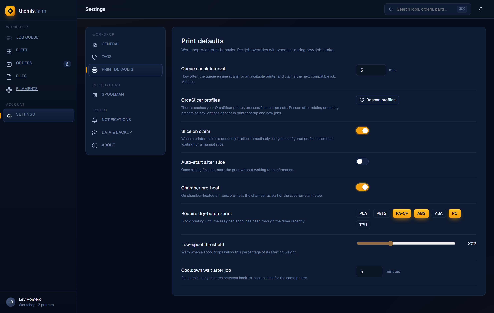
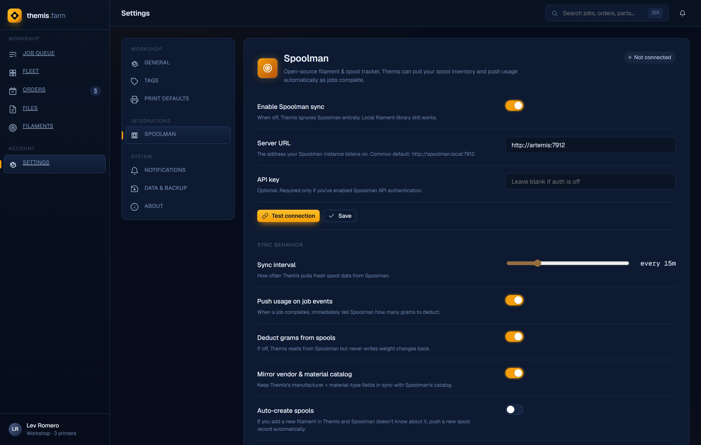
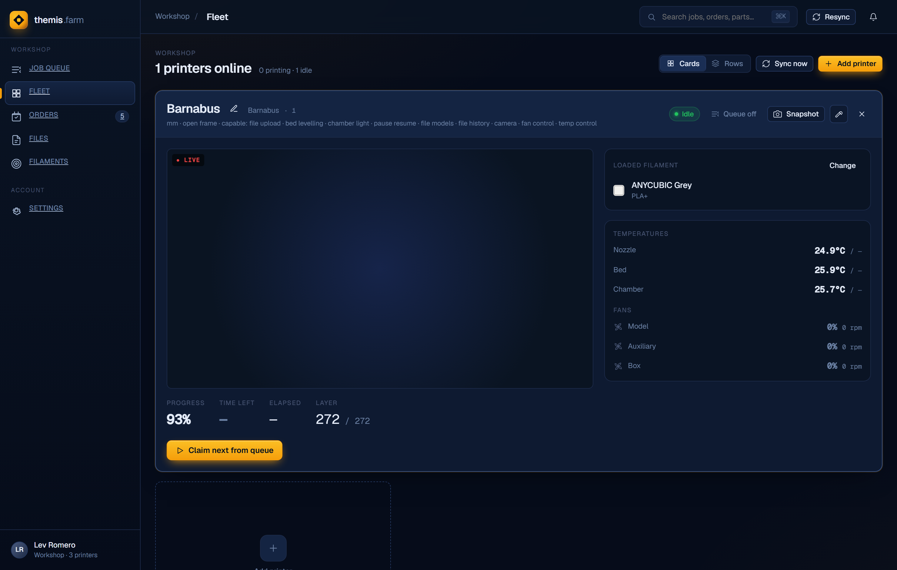
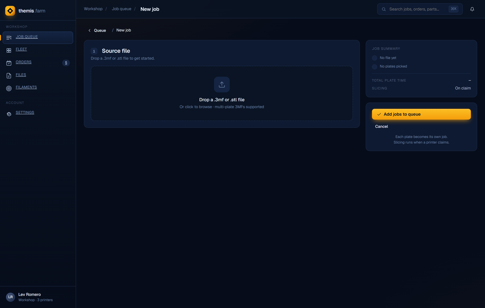
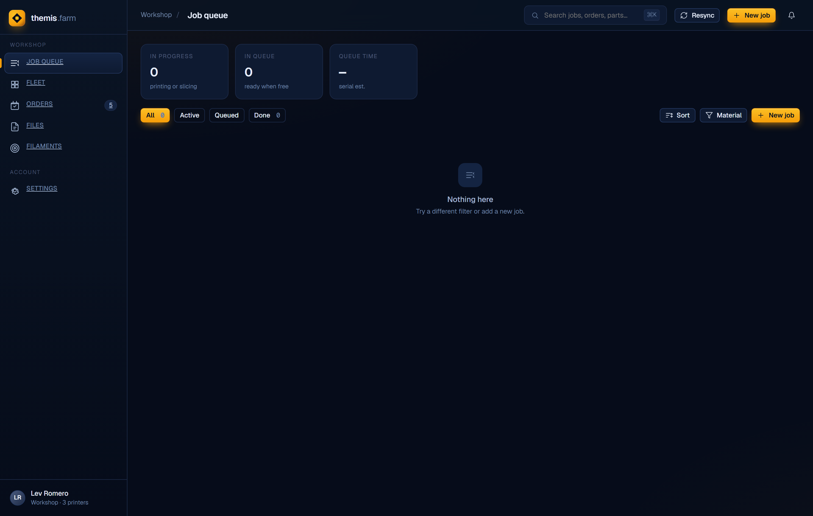

Themis — Design & Architecture
A self-hosted 3D-printing farm manager: upload models, auto-slice with native OrcaSlicer, and stream jobs to a heterogeneous fleet of printers from one queue.
This document describes Themis as built. Where it diverges from the original design spec (which predates the slicing R&D), the as-built behaviour here is authoritative. Screenshots are captured from the running app.
What it does
Themis is the control plane for a workshop of 3D printers. A user uploads a .3mf or .stl,
picks which printers may run it and with what print/filament profile, and drops the job into a single shared queue.
A background queue engine watches printer availability; when an eligible printer goes idle it slices the model
for that exact machine using the workshop's real OrcaSlicer presets, uploads the result, and starts the print —
then waits for the plate to be cleared before pulling the next job. Live printer state (temperatures, progress, camera)
streams to the browser over a WebSocket. Filament inventory can be synced from Spoolman.
Core capabilities
- Multi-vendor fleet (Bambu MQTT, Elegoo Centauri SDCP) behind one abstraction
- Single auto-claiming print queue with head-of-line blocking
- Native, headless OrcaSlicer slicing per target machine
- Multi-plate & multi-color (AMS / multi-tool) aware
- Filament-match gating & Spoolman inventory sync
- Live camera (MJPEG / RTSP→MJPEG) & telemetry
Design principles
- Capability-driven UI — controls render from capability flags, never
printer_typechecks - New vendor = one class + one registry entry
- Printers own their Orca output format via
orca_export_args() - Blocked ≠ failed — transient vs terminal job states
- SQLite + bind-mounted Orca config = zero external services required
Technology stack
| Layer | Choice | Notes |
|---|---|---|
| Backend | FastAPI (ASGI), Python 3.13 | REST + WebSocket + static-file host in one app |
| Persistence | SQLite (WAL) via async SQLAlchemy 2.0 + aiosqlite | No migration tool — Base.metadata.create_all + ad-hoc ALTERs on startup |
| Slicing | OrcaSlicer 2.3.x CLI subprocess | Driven through an embedded-config 3MF (see Slicing) |
| Printer transport | paho-mqtt (Bambu), websocket-client (Elegoo SDCP) | Thread-based clients bridged into the asyncio loop |
| Camera | httpx streaming, ffmpeg subprocess | MJPEG passthrough or RTSP→MJPEG transcode |
| Frontend | React 18 + Vite + TypeScript, React Router v6 | Hand-rolled hooks for fetch+WS; no global store |
| Packaging | Docker (single image), docker-compose | OrcaSlicer + ffmpeg baked in; host Orca config bind-mounted |
System architecture
A single FastAPI process is the whole backend. It serves the REST API, hosts the WebSocket hub, and (in production) serves the built React SPA as static files. Three long-lived in-process subsystems do the work: the PrinterManager (vendor client lifecycle + state), the QueueEngine (an asyncio loop that claims and runs jobs), and the SlicerService (CPU-bound OrcaSlicer runs dispatched to a thread pool).
Container topology & threading
- Event loop — FastAPI handlers and the QueueEngine loop run on the single asyncio loop.
- Thread-based printer clients — MQTT and SDCP clients run their own receive/keepalive threads and inject state
changes back into the loop via
asyncio.run_coroutine_threadsafe. - Slicing thread pool —
ThreadPoolExecutor(max_workers=4, thread_name_prefix="slicer")on the QueueEngine keeps the 10-minute-capped OrcaSlicer subprocess off the loop. queue_engine.py:60 - Lifespan wiring — on startup the app inits the DB, wires the PrinterManager (loop, broadcast cb, session
factory), connects all enabled printers, (re)initialises the
queue_enginesingleton, and starts its loop. main.py:28–53
Deployment & volumes
Everything ships as one Docker image with OrcaSlicer and ffmpeg baked in. In development, Vite serves the SPA on
:5173 and proxies /api and /ws to the FastAPI process on :8001; in production
FastAPI serves the built frontend/dist itself (hashed assets cached long, index.html no-cache).
main.py:80–93
| Mount | Purpose |
|---|---|
/data | SQLite DB + uploaded 3MF/STL files + sliced gcode cache |
/root/.config/OrcaSlicer (ro) | Bind-mounted from %APPDATA%\OrcaSlicer on the Windows host — printer/process/filament presets edited in the host Orca install are immediately visible to the slicer |
volumes:
- "${APPDATA}/OrcaSlicer:/root/.config/OrcaSlicer:ro"
- themis-data:/dataReal-time updates
One WebSocket per browser tab at /ws. The backend pushes printer telemetry, job transitions, and full
queue snapshots; the frontend hooks merge these into local state with no polling timer (an initial fetch primes the
state, the socket keeps it live). See WebSocket events.
Data model
Eight tables, all created on startup from SQLAlchemy models (models.py). There is no migration
framework; new columns are added with idempotent ALTER TABLE guards in database.py.
queue_position is a float so a drag-reorder can insert
between two jobs (midpoint) without renumbering the table. A job is one plate of one file; multi-plate uploads fan
out into independent jobs. job_printer_configs is the many-to-many between a job and each printer it's allowed
to run on, carrying that pairing's slice settings and per-printer failure state — this is what lets one printer's slice
failure not doom the job if another eligible printer remains.Job state machine
The status string drives everything. The crucial distinction is blocked (transient — stays in the
queue, re-evaluated every cycle) versus failed (terminal — needs user action). A slice problem or a filament
mismatch blocks; only a post-slice upload/start failure fails.
| Status | Meaning | In queue badges |
|---|---|---|
queued | Waiting for an eligible printer | pending (grey) |
slicing / uploading | Being prepared for a claimed printer | active (green) |
printing / paused | On the printer | active (green) |
blocked | Transient. Filament mismatch or slice issue at grab time; block_reason explains. Stays in queue, retried each cycle. | blocked (red) |
complete | Done; gcode artifact deleted, printer awaits plate clear | — |
failed | Terminal. Upload/start failed, or all printer configs exhausted. User can delete it. | — |
cancelled | User-cancelled from any pre-complete state | — |
Printer integration layer
All vendor differences live behind AbstractPrinterClient. The rest of the system speaks only to that ABC and
to capability flags — never to a printer_type string. Adding a vendor means writing one client class and
adding one registry entry; no route, queue, or UI code changes.
| Bambu (P1S/X1) | Elegoo Centauri Carbon | |
|---|---|---|
| Transport | MQTT over TLS | SDCP — WebSocket :3030 + HTTP /uploadFile/upload |
| Start-print | MQTT command | SDCP Cmd 128 {Filename} |
| Gcode format | .gcode.3mf archive | raw .gcode |
orca_export_args | ["--export-3mf","{base}.gcode.3mf"] | [] (raw gcode default) |
| Camera | RTSP → ffmpeg → MJPEG | MJPEG passthrough via camera_url field |
orca_export_args(file_base); the
QueueEngine passes those straight to OrcaSlicer. A new vendor that needs a different container just overrides that one
method. queue_engine.py:201–206 · slicer_service.py:88–114The PrinterManager singleton owns every client, exposes is_printer_ready(id) (idle + plate cleared) to
the queue engine, and dispatches a print-complete callback that wakes the queue. Connection lifecycle (connect on startup
for enabled printers, reconnect, disconnect) is centralized here.
Queue engine
A single asyncio task. Each iteration it processes the queue, then sleeps until either an explicit wake()
event (new job, print complete) or the configurable check interval elapses — whichever comes first.
queue_engine.py:74–98
Eligibility & head-of-line blocking
- A printer is ready when its client reports idle, the plate-clear gate is down, and
queue_onis true (a disabled-from-queue printer is still selectable at job creation, just won't auto-pull). queue_engine.py:101–111 - For each ready printer the engine takes the single lowest-
queue_positionjob that lists it (statusqueuedorblocked). If that job can't run on this printer — its config isslice_failed, or the required filament (type AND color) isn't loaded — the job is setblockedwith a reason and the engine stops looking for this printer. It does not skip ahead to a later job. queue_engine.py:114–139 - Filament match is case-insensitive and
#-insensitive on colour; a job with no declared filament matches anything. queue_engine.py:27–43 - Blocked jobs are re-evaluated every cycle, so loading the right spool — or another compatible printer coming free — unblocks them automatically.
Slice failure vs job failure
A slice failure marks that one job_printer_config.slice_failed=True and blocks the job, so another
compatible printer can still rescue it later. A post-slice upload/start failure is terminal — the job goes
failed and its gcode is cleaned from disk and DB.
queue_engine.py:281–329
Slicing pipeline
This is the hardest-won part of Themis. The goal: run the workshop's real native OrcaSlicer headlessly, with the user's own presets, producing a gcode artifact for one specific machine — no GUI, no profile sync.
--load-settings does not work for these presets:
user presets are inheritance diffs, and even fully resolved, --load-settings never registers the machine
as the active printer, so Orca rejects the process ("process not compatible with printer"). The only path that works
is slicing a 3MF with an embedded Metadata/project_settings.config, which establishes the active printer
by identity. Themis therefore becomes the GUI's "export": it generates that 3MF itself.Stage by stage
- PresetResolver — indexes every preset by name across
system/and signed-inuser/*folders (skipsuser_backup-*), walks each preset'sinheritschain and deep-merges into one flat, self-contained config. Fixesprinter_settings_idto the leaf preset name so the active-printer identity matches. preset_resolver.py - build_project_config() — a sparse hand-merge segfaults Orca, so this baselines a complete real exported
config (~609 keys,
orca_reference/project_settings_reference.json) and overrides only keys present in it, coercing to the reference type. Filament fields are parallel per-slot arrays (one entry per AMS/tool slot);single_extruder_multi_material=1for AMS. project_config_builder.py - mesh_3mf_builder — wraps the model. For a
.3mf,build_sliceable_3mf()preserves3D/*geometry +model_settings.config(per-object overrides, paint, the per-partextruder= colour-slot mapping) and swaps in the generatedproject_settings.config. For a bare.stl,stl_to_3mf()parses the mesh and emits a fresh 3MF with the embedded config. mesh_3mf_builder.py - _run() —
orcaslicer --slice N --outputdir <dir> {export_args} prepared.3mf. Orca always writes rawplate_N.gcodeto--outputdir;--export-3mf <name>(Bambu) additionally emits the archive. Returns the requested artifact. 10-minute timeout. slicer_service.py:88–114 - Recovery tier — mirrors the GUI's "import geometry only": if the primary slice fails (e.g. bad embedded settings), rebuild the 3MF dropping the file's own settings/overrides and re-slice with our fresh config. slicer_service.py:69–76
override_inspector.inspect_overrides() diffs the uploaded
project_settings.config against the generated config over a curated set of intent keys (supports, brim, raft,
infill, wall/shell layers, layer height, ironing) and checks slot capacity, so the New-Job UI can warn the user and let
them choose. override_inspector.pyProfile resolution & the compatibility index
The New-Job process/filament dropdowns must show only presets valid for the chosen machine. ProfileIndex resolves
inheritance once and builds two maps: machine-preset-name → (printer_model, nozzle), and
(printer_model, nozzle) → compatible {process, filament} preset names. Keying on
(model, nozzle) instead of machine name sidesteps the leaf-vs-system naming mismatch. It's cached and rebuilt on a
user-preset mtime signature; POST /printers/rescan-profiles forces a rebuild.
profile_index.py
Compatibility is matched two ways, mirroring OrcaSlicer's own dropdown logic:
| Mechanism | Rule |
|---|---|
| Name-list | A preset's resolved compatible_printers is mapped through the machine map to (model, nozzle). |
| Universal | A selectable preset (raw leaf instantiation ≠ "false") with empty compatible_printers and empty compatible_printers_condition is compatible with every printer — this is how the OrcaFilamentLibrary Generic *@System filaments ship. Abstract @base presets are excluded. |
compatible_printers_condition. An expression evaluator was scoped but found
unnecessary: the installed config has zero non-empty conditions (the key exists but every value is ""),
and every conditioned preset also carries a name-list. Non-empty conditions only appear in exported project 3MFs,
which Themis slices directly rather than looking up. It will be revisited only if a real conditioned-without-name-list
preset appears.
Filament & Spoolman integration
Each printer carries loaded_filaments (slot, type, color, optional Spoolman id). At queue-pull time the
engine checks the job's required filament type and color against what's loaded; a mismatch blocks the job. Filament
requirements are stored as structured filament_type + filament_color on the
job_printer_config, plus an optional Spoolman filament_id.
When Spoolman is configured, the New-Job and Fleet filament pickers source from the Spoolman filament catalog
(displaying the name, storing the id). Manual entry is always allowed — even with Spoolman integrated — so an off-catalog
spool can still be specified. When Spoolman is off, only manual type+color entry is offered. The backend talks to Spoolman
over HTTP (/api/v1/info, /filament, /spool) with an optional API key.
spoolman_service.py · settings.py · spoolman.py

Camera proxy
CameraProxy normalizes per-vendor camera streams into one MJPEG endpoint per printer, only spawning work when
a feed is actually viewed. Three modes: MJPEG passthrough (Elegoo camera_url), single-frame JPEG snapshot
(capped at ~2 MB, used for the poll-based fallback tile), and RTSP→MJPEG via an ffmpeg subprocess (Bambu), killed on client
disconnect. The frontend renders the live feed as a plain <img> or, when offline, polls the snapshot
endpoint. camera_proxy.py · ui.tsx VideoTile
REST API
All routes under /api/v1/, registered from eight routers. main.py:65–72 Highlights:
| Group | Endpoint | Purpose |
|---|---|---|
| Files / Jobs | POST /files/upload | Store 3MF/STL, run parser, return plate list + thumbnails |
POST /jobs · POST /jobs/check-overrides | Create job(s) from file + plate + per-printer configs; pre-flight override check | |
GET /files/{id}/plates · plate thumbnail | Plate metadata & render thumbnail | |
| Queue | GET /queue | Ordered active job list (incl. blocked/failed) |
POST /jobs/{id}/cancel · PATCH /queue/reorder | Cancel; drag-reorder via queue_position | |
| Printers / Fleet | GET /printers/types | ConnectionField descriptors per vendor → dynamic add-printer form |
GET /fleet | Normalized per-printer state (telemetry, capabilities, filaments) | |
GET /printers/{id}/profiles | Process + filament presets compatible with the printer's machine | |
GET /printers/orca-machine-catalog · POST /printers/rescan-profiles | Machine catalog for the make→model→nozzle cascade; force index rebuild | |
| Printer control | POST /printers/{id}/{pause,resume,stop,light,jog-z,fan,bed-temp,reconnect} | Capability-gated commands (422 if unsupported) |
| Camera | GET /printers/{id}/camera · /snapshot | MJPEG stream / single JPEG |
| Settings | GET·PUT /settings/queue · /settings/spoolman · POST /settings/spoolman/test | Queue interval; Spoolman config + test |
| Spoolman | GET /spoolman/filaments · /spools | Proxy the Spoolman catalog/inventory |
A telegram_webhook router exists as a stub but is not registered in main.py — not a live surface.
WebSocket events
Server→client messages are {type, data} JSON on /ws:
| Type | Payload | Drives |
|---|---|---|
printer_state | Normalized printer status (temps, progress, layer, fans, state) | Fleet cards, video tile |
job_update | {id, status, assigned_printer_id, queue_position} | Single-job merge in the queue |
queue_update | Full ordered list of active jobs | Queue list + sidebar badges |
Frontend architecture
React + Vite + TypeScript, React Router v6. An AppShell wraps every screen with a fixed
Sidebar and a Topbar whose title/breadcrumbs/actions come from a per-route config object. There is no global
store; each screen uses small hooks that fetch on mount and subscribe to the WebSocket. App.tsx
| Route | Screen | What it does |
|---|---|---|
/queue | QueueScreen | Job list with status tabs, summary stats, plate thumbnails, and a sticky detail panel (cancel/delete). useQueue() + useFilePlates(). |
/queue/new | NewJobScreen | Upload → per-plate config: eligible printers, print profile, filament (Spoolman or manual), order link. Override-alert modal; submit→reset→toast. Mobile: cards stack, action card last. |
/fleet | FleetScreen | Printer cards/rows, expand for camera + temps + fans + progress, loaded-filament picker, queue_on toggle, and an edit modal with a make→model→nozzle cascade resolving to a machine preset. |
/settings/* | SettingsScreen | General, Print defaults (queue interval, rescan profiles, slicing behaviour), Spoolman integration, and more. |
/orders, /files, /filaments | Orders / Files / Filaments | Order tracking, file library, and filament library views. |
The sidebar's queue badges are computed (useMemo) from the live jobs array: active =
printing/paused/slicing/uploading, pending = queued, blocked = blocked. Because the jobs array is fed by the
WebSocket, the badges stay current without polling. App.tsx · Sidebar.tsx



API client layer
Typed wrappers in src/api/*.ts own all endpoint knowledge and the shared TS types
(MachinePreset, OverrideCheck, FleetPrinter, ApiJob, …). Hooks
useQueue, useFleetData, useFilePlates, useSpoolmanConfig/useSpools/useFilaments
encapsulate fetch + WebSocket-merge so screens stay declarative.
Environment variables
| Variable | Default | Purpose |
|---|---|---|
THEMIS_DATA_DIR | /data | SQLite DB, uploads, gcode cache root config.py:7 |
ORCA_CONFIG_DIR | /root/.config/OrcaSlicer | System + user preset directory (bind-mounted) config.py:11 |
ORCA_EXECUTABLE | orcaslicer | OrcaSlicer CLI path config.py:15 |
FFMPEG_EXECUTABLE | ffmpeg | RTSP→MJPEG transcode config.py:19 |
THEMIS_STATIC_DIR | ../frontend/dist | Built SPA assets (prod) main.py:24–25 |
ORCA_CONFIG_DIR must point at %APPDATA%\OrcaSlicer
or the resolver finds no presets (it defaults to the in-container path). The dev server should be launched with this set.Key decisions & gotchas
Embedded-config 3MF slicing
--load-settings can't establish the active printer; only an embedded project_settings.config does. Themis generates that 3MF rather than driving the GUI. Headless, no profile sync.
No --export-gcode
That flag is "Invalid option". Raw plate_N.gcode is the default --outputdir output; --export-3mf <name> is additive and needs a relative filename (absolute path double-joins and crashes).
Complete baseline config
A sparse hand-merged project_settings.config segfaults Orca. Baseline a full ~609-key real config and override only known keys with coerced types.
Universal-compat filaments
Generic filaments ship with no compatible_printers = compatible with all. ProfileIndex must add them to every machine, or the most-used filaments vanish from the dropdown.
Blocked ≠ failed
Filament/slice issues are transient and stay in the queue for retry; only post-slice upload/start errors are terminal. Head-of-line: a blocked job stops that printer's search.
Capability discipline
No printer_type comparisons in the UI or queue logic — everything keys off capability flags and the client ABC, so new vendors slot in cleanly.
Generated as the as-built reference for Themis. Diagrams render via Mermaid; screenshots are from the live app. See also the original design spec, the printer-interface pattern, and the Elegoo Centauri client notes.